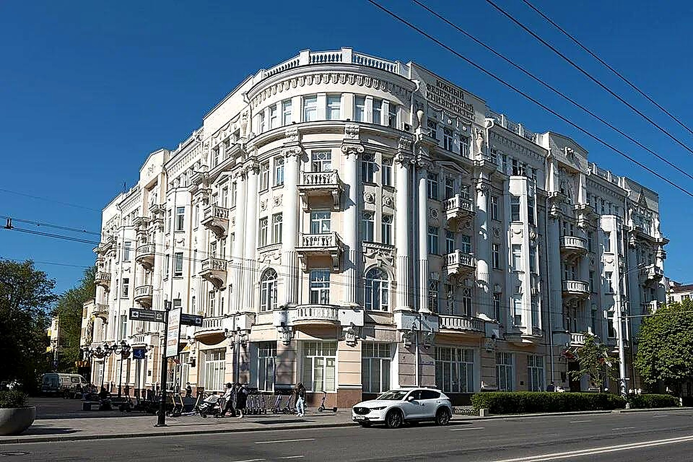
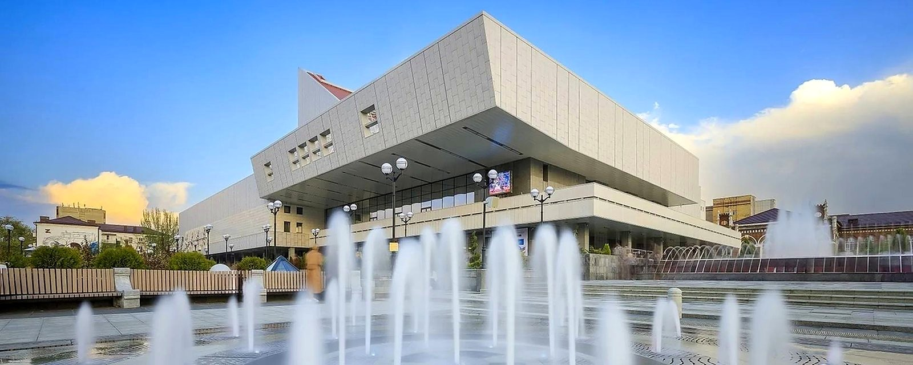
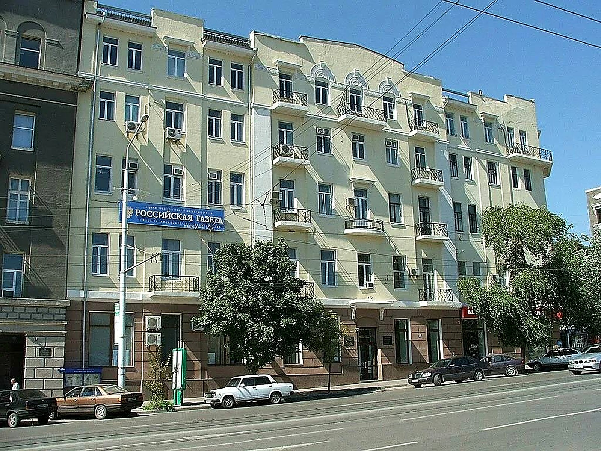
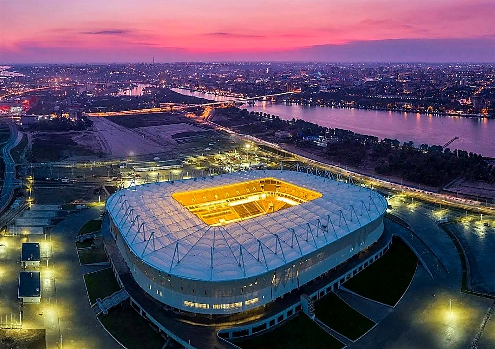

↖ Дом Маргариты ЧерновойФигуры-колонны на фасаде
↖ Дом Маргариты ЧерновойФигуры-колонны на фасаде

↑ Главное здание ЮФУКорпус университета
↗ Музыкальный театрТеатр на Большой Садовой ← Музей «Россия — моя история»Мультимедийный музей
← Музей «Россия — моя история»Мультимедийный музей
Цель: найти Академию архитектуры и искусств ЮФУ
Левый берег Дона
Зона отдыха на левом берегу Дона: пляжи, рестораны и вид на город.
Подсказка: Академии здесь нет. Загляните на мост, перекинутый через Дон.

→ Академия архитектуры и искусств ЮФУБуденновский проспект, 39 ↙ Парамоновские складыКирпичные склады XIX века
↙ Парамоновские складыКирпичные склады XIX века
 ↓ Ворошиловский мостМост через Дон
↓ Ворошиловский мостМост через Дон

↘ Ростов-АренаСтадион чемпионата мира